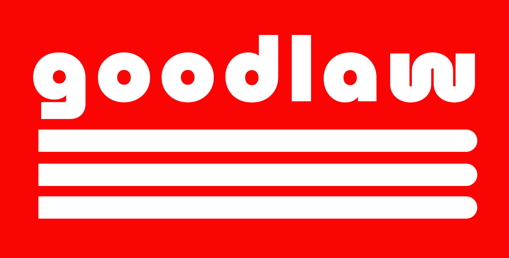

Julien Newman
I’m an entrepreneur with an interest in philosophy
What I’m working on
I’m part of the team which is building Goodlaw. We let immigrants easily get quality legal advice. Goodlaw combines human lawyers with AI which means immigrants get a dramatically better service for exponentially cheaper
Before founding Goodlaw I worked on Dedicated.ai which let businesses get all of their employees to help with sales. We were backed by top investors including Village Global, the VC chaired by Reid Hoffman
Check out the Bitzscaling Podcast which I co-host with Chris Yeh. I’m also involved with the Princeton Project in Philosophy & Religion
Work style
The team at Goodlaw moves faster than others by always getting shit done right away. And by working on things which might be super huge

Texts which influenced me
Not necessarily a recommendation. Rather, these are texts which shaped how I think
On Reading and Books by Schopenhauer
The TLDR is to read less. When you read you let someone else think for you. And what’s valuable is to think original thoughts (read the essay)

The Republic by Plato
Plato’s definition of Justice was offensive to me and in contradiction with my values. Reading The Republic was the first time that I truly understood a different perspective (read the book)
{kind=link}